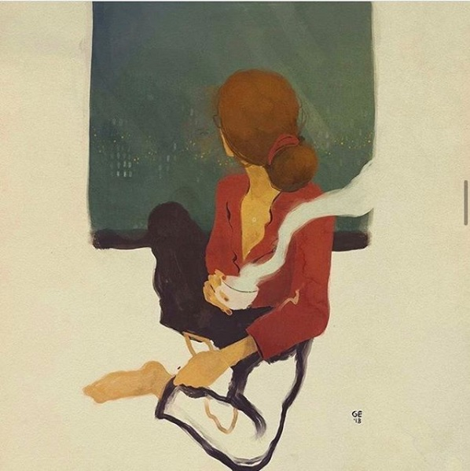
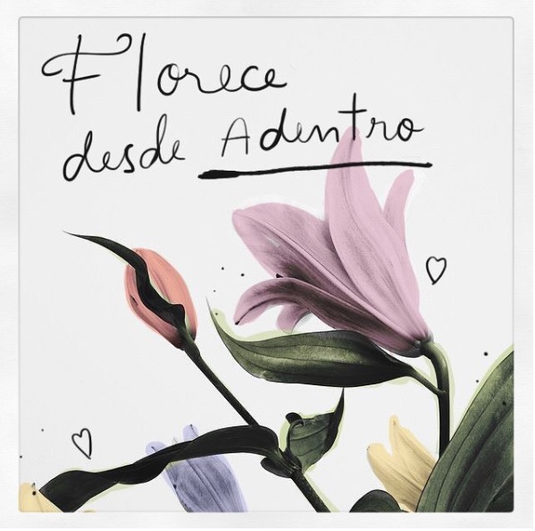

No estás sobre reaccionando, no eres una exagerada, no importa cuantas vueltas le des al tema en tu cabeza o la opinión de los demás sobre el tema, ESTE ES TU SENTIR, y es completamente válido, no necesita ser justificado, y de todo lo anterior muchísimo menos tiene algo que ver con tu periodo. Solo confía, porque por algo te sientes así, es momento de que creas en ti.
Bueno, si esta pregunta está rondando tu mente es probable que en este momento algo esté irrumpiendo en tu tranquilidad, ya sea uno o varios temas en tu vida actual, de tu pasado o incluso estes anticipándote al futuro. Tal vez llego a ti una gran tristeza, ansiedad, miedo, o algún otro sentimiento generándote molestia. Algo si es seguro, nada cambia si nada cambia. Si te lo estás planteando seguro que llego tu tiempo de movilizarte y ver por ti. Confía en tu sabiduría e intuición. Ir a terapia puede ser una buena opción para explorar lo que estás viviendo, tus ideas alrededor de ella y más aún, encontrarte acompañada en un lugar seguro donde poder expresar todo eso que estás sintiendo. Te prometo que no caminarás sola, para mí, será un gusto acompañarte
Cómo actividad de fin de curso, y apoyo para el confinamiento y todos los sentimientos que continúan generándose, mis pequeños de kínder 1 y yo hicimos un frasco de la calma. Y aunque su finalidad es la relajación, nos divertimos mucho en su elaboración. ¿Conoces esta herramienta? Les comparto con gusto un poco de información
